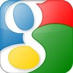

We all love Google, right? Check out some of the great things about using Google tools below!
Google Docs is a powerful word processing tool that many schools have adopted. As it's similar to Microsoft Word and other word processing tools, most of its features are intuitive to use. However, in addition to completing many of the functions of a traditional word processor, Google Docs provides even more capabilities that can be invaluable to educators. :
One of the most powerful features of Google Docs is that you can share and collaborate on documents with others. Think about all the times where you work on something at home and then email it to yourself at school or put it on a thumb drive. How about the challenge of students who "forgot their essays" or couldn't print their homework? Not only does Drive solve this, but it also opens up possibilities for real time collaboration and feedback.
Gmail comes with chat, call, and Hangouts all built-in to save you time and your computer energy. Gmail's multitasking abilities makes the need to have several programs open (such as Skype) moot. Are you working from home? Launch a virtual meeting with up to nine people at a time with Hangouts, right from Gmail (you no longer have to access it from Google+). You can share your screen, watch YouTube together, and even wear funny hats.
Of course, it's also standard e-mail, but it's searchable, you can access on a computer or your phone, you can add labels to help you find things better later on, and you can easily share Google Drive items through Gmail!
At one point, creating a PowerPoint presentation to show to the class was cutting-edge classroom technology. Those days are gone, and now, online presentations enable so much more for students.
Google Slides allows you to collaboratively create business presentations with others in your organization. With Google’s continuous delivery of new features and functionality, there are always new ways to make your presentations more effective. They are stored in the cloud, so they are easily embeddable on webpage or blog posts.
Go to your browser and do a search by typing in the word Google backwards. For those of you who might not be the best reverse spellers, enter in elgoog. This will take you to a bizzaro version of Google where you can waste a bunch of time playing...go see!
Google is so much fun!
Created by Vicente Rodriguez at JHSLinks to an external site. * © 2017